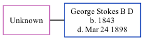

Unknown Stokes (née Unknown)
[ Home ] | [ Calendar ] | [ Surnames Index ] | [ Family History ]Unknown Unknown, the wife of Rev George Stokes B D (the three times great-uncle of Michele Copp (née Phillips)), and married George in Blackrock on Jul 3, 18831.
Citations
- Belfast, Northern Ireland, The Belfast Newsletter (Birth, Marriage and Death Notices), 1738-1925 Ancestry.com Operations, Inc. ( The Belfast Newsletter. Belfast, Northern Ireland. Periodicals & Newspapers, Irish & Reference. Linen Hall Library, Belfast, Northern Ireland.)
Family Tree
Generated by ged2site. Last updated on Sep 9, 2024